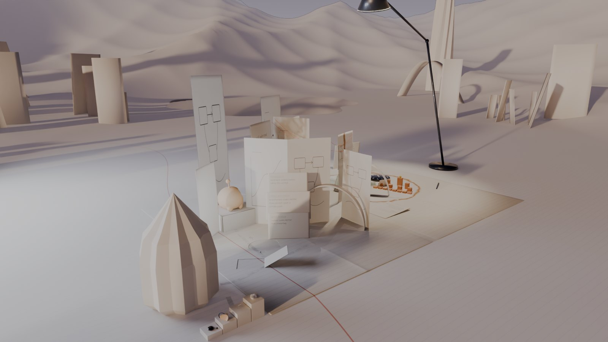
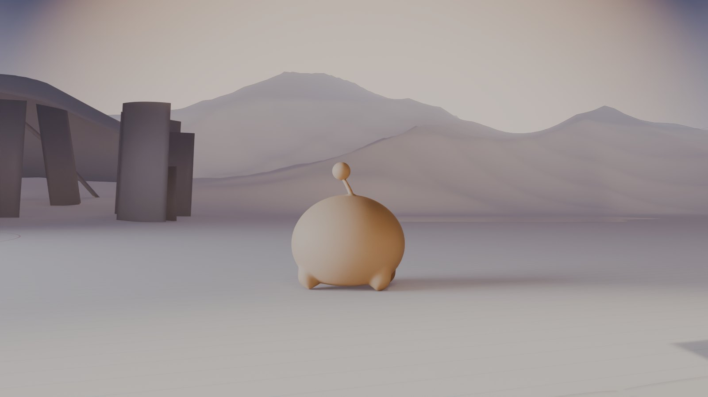
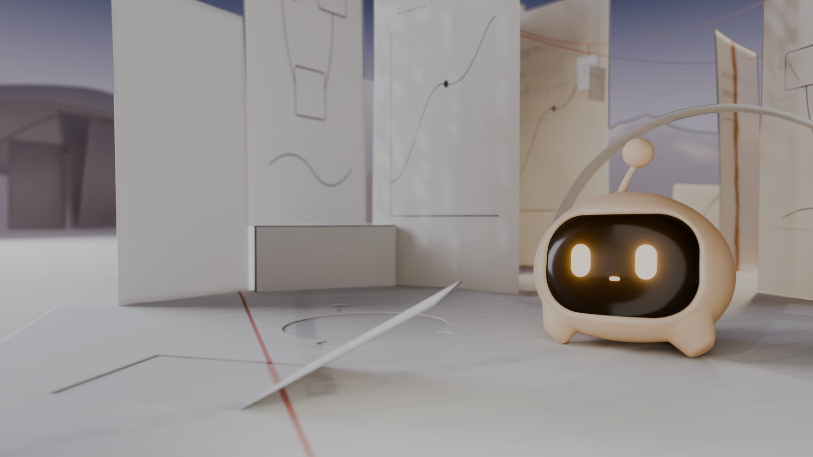
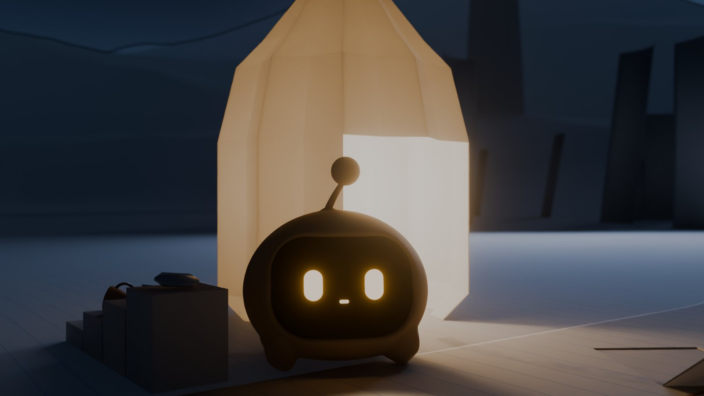
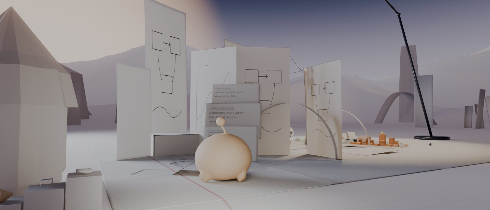
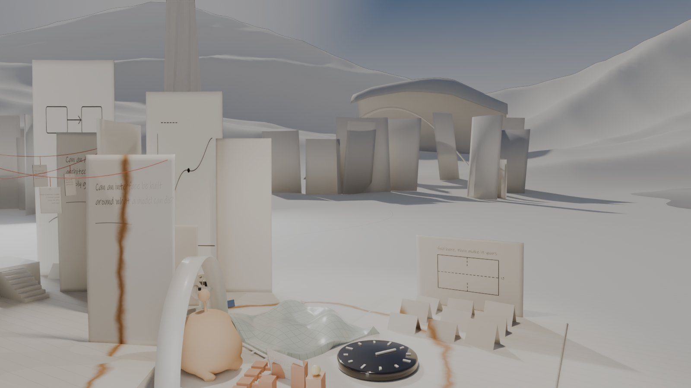
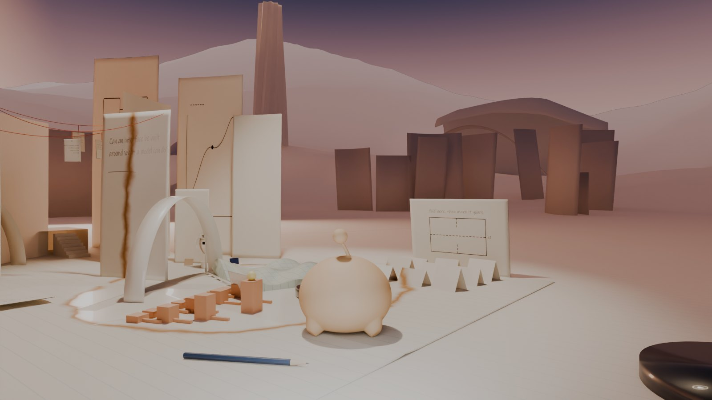
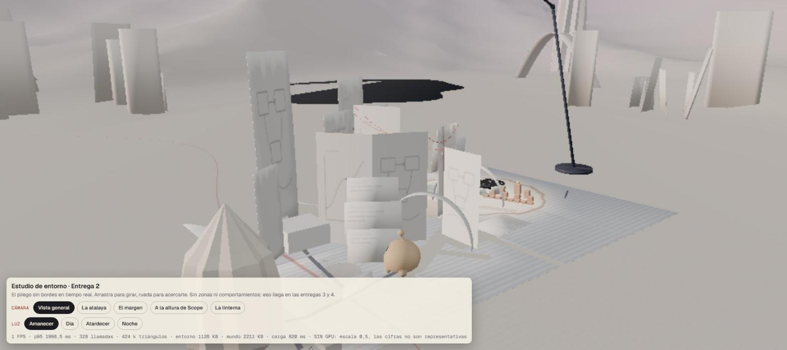
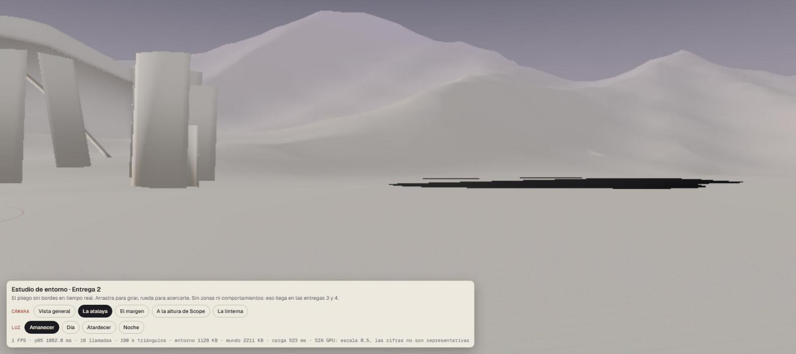

Scope World 2.0 · Entrega 2 · pase de arte del entorno
Una sola hoja, hasta el horizonte.
Las cordilleras ya no son montañas de videojuego: son la misma hoja plegada a varias escalas, sin facetas, que se funde en el aire. El pliego deja de verse como un rectángulo: sus líneas pautadas salen, se curvan y se disuelven; el margen sigue como un camino. Cada lugar tiene su luz.
pendiente de tu aprobación · renders de Cycles con el mundo aprobado sin modificar y el modelo de Scope intacto · mismas cámaras que la Fase A · sin las siete zonas
Fase A → Entrega 2 mismas cámaras, mismo mundo aprobado
Fase A

Entrega 2

Fase A

Entrega 2

Fase A

Entrega 2

Fase A

Entrega 2

Luz con intención tres vistas nuevas
No todo el mundo es oscuro: cada zona tiene su hora y su luz. Amanecer en el margen, día claro y construido en el círculo, atardecer cálido hacia el aula, noche de Scope.



El estudio en tiempo real navegable · puerto 3110
El mismo entorno, exportado de Blender, sobre el mundo y el Scope del prototipo 1.0 (reutilizados en solo lectura): cielo con halo, niebla solo sobre la geometría, las líneas pautadas que se disuelven como shader, cuatro ambientes de luz y las cinco cámaras de los renders. Sin zonas ni comportamientos.


| Medida | Valor | Fiabilidad |
|---|---|---|
| Carga local (mundo + entorno + Scope) | 0,5–1,4 s | medido |
| Entorno exportado | 1,13 MB · 52 657 triángulos | medido · por encima del objetivo de 20 000 |
| Llamadas de dibujo | 328 (vista general) · 16 (atalaya) | medido |
| Optimización aplicada | entorno estático fusionado (~95 piezas → 3), un solo sol con sombras | hecho |
| FPS | ≈ 1 aquí, igual que el prototipo 1.0 en las mismas condiciones | no representativo: sin GPU y pestaña automatizada |
node docs/redesign/scope-world/entrega-2-entorno/visor/tools/serve.mjs --port 3110 → http://localhost:3110/?camara=horizonte&hora=amanecer
MathView en el mundo, sin servidor propuesta
No se despliega MathView ni su API. La instalación transmite lo que MathView hace de verdad —|f(z)| en altura y la fase en color, ceros y polos— con cálculo propio en el navegador y material real del frontend rediseñado.
La pieza
La función que se pisa- La superficie de celadón es |f(z)| de unas pocas funciones de ejemplo (z, 1/z, (z²−1)/(z²+1), z³−1, sen z), calculada en JavaScript con aritmética compleja estándar: sin código de MathView, sin dependencias.
- El vidriado cambia de tono con la fase (esmaltes celadón, ámbar y lavanda, no el arcoíris de Plotly). Ceros = hoyos; polos = picos.
- Scope se asoma a un cero; su luz enciende la curva de nivel que pisa.
La ficha
Contenido profesional, accesible- Qué problema resuelve, qué construí, tecnologías (Angular, Plotly, Django, NumPy, SymPy), funciones reales.
- Capturas reales del frontend rediseñado (
MathView-Frontend/docs/rediseno/recursos/): racional, z³−1, zeta, Mandelbrot. - Sellos: «Representación del método» para la pieza; «Producto real · repositorio» para los dos repos. Sin demo en vivo, y dicho.
Lo que aún no está bien
- Pliegues suaves: las cordilleras ya se leen como papel plegado, pero sus crestas son redondeadas. Si las quieres más vivas, el siguiente paso es partir las normales en las crestas.
- Arboledas: a contraluz, alguna hoja aún puede leerse como losa.
- Peso en tiempo real: 52 657 triángulos de entorno; hay que instanciar hojas y decimar el relieve lejano.
- Rendimiento con GPU: sin medir; este equipo no tiene GPU.
Lo que necesito de ti
- ¿Apruebas el resultado artístico del entorno? Relieve continuo, integración del pliego, luz por zonas.
- ¿Sigo con la entrega 3 (prototipo de comportamiento) según
../entrega-3-comportamiento/DISEÑO.md? - La entrega 4 (integración y expansión) no empieza sin tu aprobación.